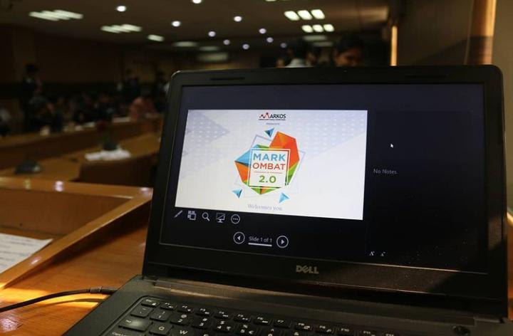
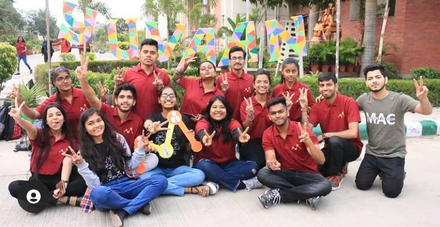
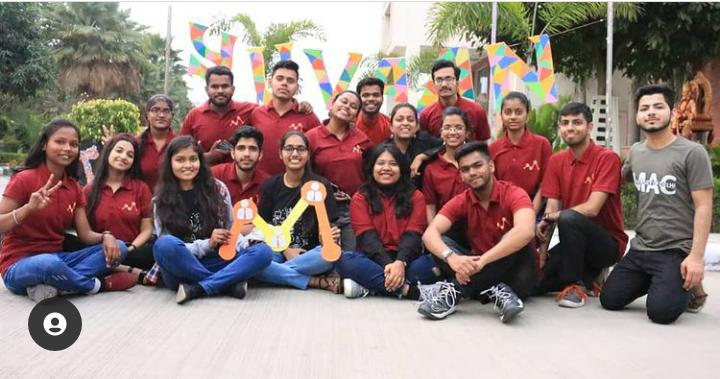
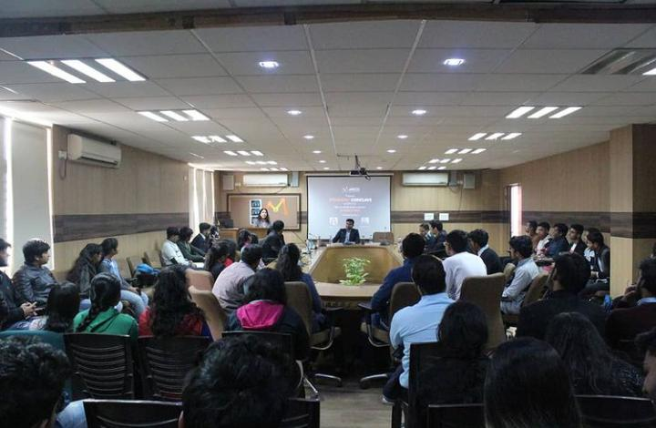
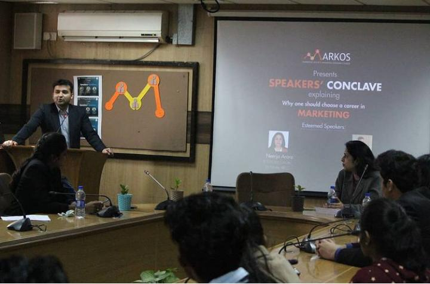
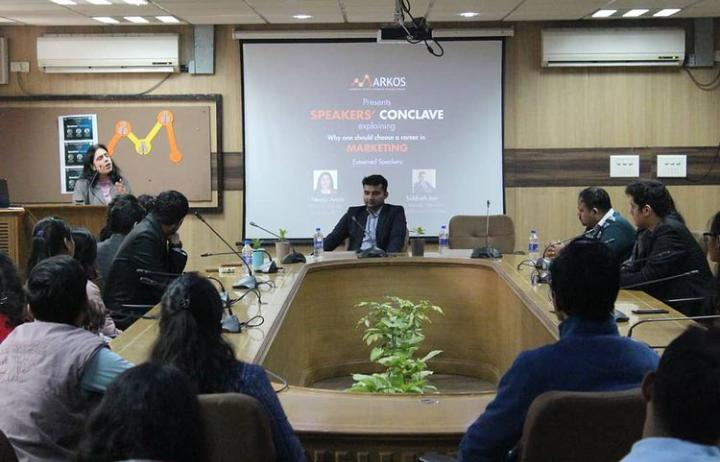
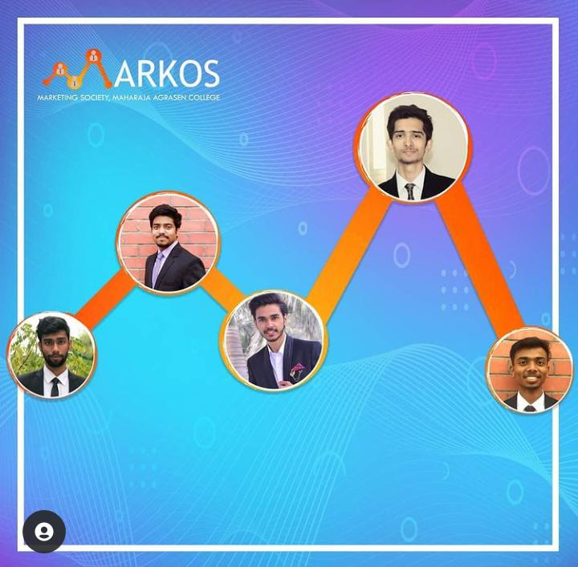

Markos
Markos - The Marketing Society of MAC

1/10
Markos
⪦
⪧



' Mony mony">



Markos
Markos, The Marketing Society of Maharaja Agrasen College was officially set up in the year 2017. It was
a collective dream of some students, who were striving to make the college better, and some fresher’s,
who had a vision a of being the change.
Through collective efforts, Markos initially began as a club. Enthusiastic members used to meet up once
a week to discuss various marketing trends. By the end of “odd semester”, the club was officially
recognized as an ECA(Extra Curricular Activities) Society.
Markos hosted its first event under the flagship of college’s annual fest Yuvaan. The event was named as
Marketing Bravado and was a plethora of activities, meant to test marketing acumen of the participants.
The event witnessed participation in great numbers and was a huge success.
Gallery
Copyright © 2021 - All Rights Reserved - Jigyasu 😎